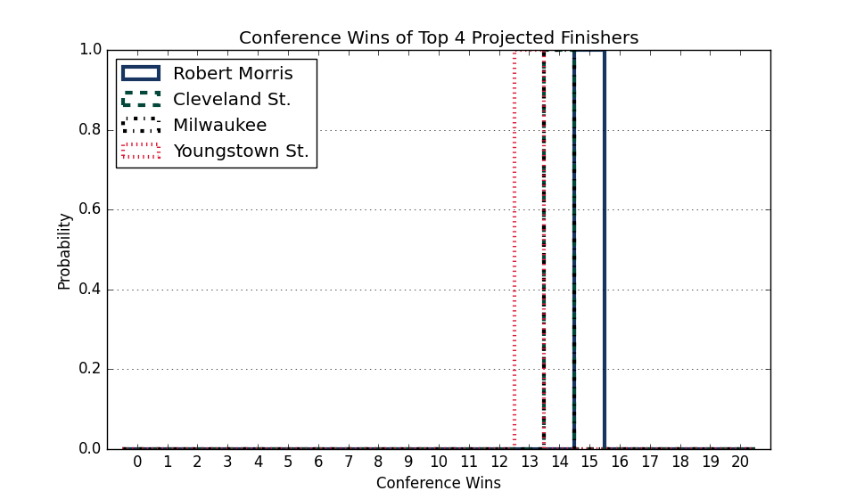

Horizon
Updated with games through Tuesday, January 27
Conference Projections
Based on 10,000 simulations of the remaining season.
Tiebreaking was done using the
Big Ten tiebreaking procedures.
| Horizon |
Current Record |
Projected Record |
Projected Finish (% odds, with tiebreakers) |
|
Team |
Conf. |
Overall |
Conf. |
Overall |
1st | 2nd | 3rd | 4th | 5th | 6th | 7th | 8th | 9th | 10th | 11th |
| 1. |
Oakland (121) |
8 - 3 |
11 - 10 |
15.1 - 4.9 |
18.1 - 11.9 |
42.0 | 48.5 | 7.1 | 1.8 | 0.4 | 0.1 | 0.0 | | | | |
| 2. |
Wright St. (140) |
8 - 2 |
11 - 8 |
14.9 - 5.1 |
17.9 - 11.1 |
54.1 | 35.0 | 7.2 | 2.2 | 1.1 | 0.3 | 0.1 | | | | |
| 3. |
Fort Wayne (225) |
7 - 3 |
10 - 8 |
11.3 - 7.7 |
14.3 - 12.7 |
2.3 | 7.6 | 28.2 | 23.2 | 18.4 | 12.1 | 6.5 | 1.4 | 0.2 | 0.0 | |
| 4. |
Green Bay (227) |
7 - 4 |
10 - 10 |
11.6 - 8.4 |
14.6 - 14.4 |
0.9 | 4.3 | 27.4 | 24.8 | 18.8 | 12.9 | 7.0 | 2.8 | 1.1 | 0.1 | |
| 5. |
Northern Kentucky (193) |
6 - 5 |
11 - 8 |
11.2 - 8.8 |
16.2 - 11.8 |
0.5 | 3.0 | 19.3 | 23.9 | 22.6 | 16.3 | 10.1 | 3.4 | 0.8 | 0.1 | 0.0 |
| 6. |
Robert Morris (199) |
5 - 6 |
11 - 9 |
10.2 - 9.8 |
16.2 - 12.8 |
0.1 | 1.2 | 6.9 | 13.6 | 20.1 | 25.1 | 21.4 | 8.2 | 2.7 | 0.8 | 0.1 |
| 7. |
Milwaukee (223) |
5 - 6 |
8 - 13 |
9.9 - 10.1 |
12.9 - 17.1 |
0.0 | 0.3 | 3.5 | 8.5 | 14.2 | 22.7 | 29.6 | 15.0 | 5.1 | 0.8 | 0.1 |
| 8. |
Youngstown St. (218) |
3 - 8 |
7 - 12 |
7.7 - 12.3 |
11.7 - 16.3 |
| 0.0 | 0.2 | 1.1 | 2.8 | 5.6 | 12.4 | 31.2 | 31.5 | 12.4 | 2.8 |
| 9. |
Detroit (290) |
5 - 6 |
6 - 12 |
7.7 - 12.3 |
8.7 - 18.3 |
| | 0.2 | 0.8 | 1.7 | 4.5 | 11.7 | 33.3 | 39.2 | 8.0 | 0.7 |
| 10. |
Cleveland St. (320) |
3 - 7 |
4 - 14 |
5.4 - 14.6 |
6.4 - 21.6 |
| | | 0.1 | 0.1 | 0.4 | 1.0 | 3.7 | 13.6 | 46.4 | 34.7 |
| 11. |
IUPUI (312) |
2 - 9 |
4 - 16 |
4.2 - 14.8 |
6.2 - 21.8 |
| | | | 0.0 | 0.0 | 0.1 | 1.1 | 5.9 | 31.4 | 61.6 |
Weekly Changes |
| 1. |
Oakland (121) |
|
-0.3 | -5.4 | +4.0 | +1.4 | +0.3 | +0.1 | +0.0 | +0.0 | +0.0 | +0.0 | +0.0 |
| 2. |
Wright St. (140) |
|
-2.3 | -2.8 | +3.0 | +1.0 | +0.7 | +0.2 | +0.1 | +0.0 | +0.0 | +0.0 | +0.0 |
| 3. |
Fort Wayne (225) |
|
+1.8 | +4.7 | +3.0 | +1.5 | -0.3 | -2.9 | -3.2 | -3.3 | -1.3 | -0.1 | +0.0 |
| 4. |
Green Bay (227) |
|
+0.7 | +3.1 | +5.0 | +5.0 | +0.8 | -2.7 | -4.8 | -4.6 | -2.5 | +0.0 | +0.0 |
| 5. |
Northern Kentucky (193) |
|
+0.0 | +0.1 | -6.0 | -0.8 | +2.6 | +2.9 | +1.8 | -0.4 | -0.3 | +0.1 | +0.0 |
| 6. |
Robert Morris (199) |
|
-0.1 | +0.1 | -7.3 | -4.2 | +0.9 | +6.3 | +5.5 | -0.5 | -1.3 | +0.4 | +0.1 |
| 7. |
Milwaukee (223) |
|
+0.0 | +0.2 | -0.0 | +0.5 | +1.6 | +5.1 | +8.6 | -4.6 | -11.4 | +0.1 | +0.1 |
| 8. |
Youngstown St. (218) |
|
+0.0 | -0.0 | -1.0 | -2.2 | -2.9 | -4.3 | -3.9 | +5.7 | -2.1 | +8.3 | +2.4 |
| 9. |
Detroit (290) |
|
+0.0 | -0.0 | -0.7 | -2.2 | -3.7 | -4.9 | -5.1 | +3.7 | +4.9 | +7.2 | +0.7 |
| 10. |
Cleveland St. (320) |
|
+0.0 | +0.0 | +0.0 | +0.1 | +0.1 | +0.3 | +0.9 | +3.0 | +9.1 | -13.0 | -0.5 |
| 11. |
IUPUI (312) |
|
+0.0 | +0.0 | +0.0 | +0.0 | +0.0 | +0.0 | +0.1 | +1.0 | +4.9 | -3.1 | -2.8 |
This table gives the probability of earning at least a share of a given place.
So there are no tiebreakers and there can be multiple first place teams, for example.
|
Projected Finish (% odds, no tiebreakers) |
|
Team |
Outright |
1st | 2nd | 3rd | 4th | 5th | 6th | 7th | 8th | 9th | 10th | 11th |
| 1. |
Oakland |
41.5 | 62.2 | 32.0 | 4.5 | 1.1 | 0.2 | 0.1 | 0.0 | | | | |
| 2. |
Wright St. |
33.8 | 54.3 | 35.6 | 7.3 | 1.8 | 0.8 | 0.2 | 0.1 | | | | |
| 3. |
Fort Wayne |
2.3 | 2.3 | 7.6 | 28.2 | 23.2 | 18.4 | 12.1 | 6.5 | 1.4 | 0.2 | | |
| 4. |
Green Bay |
0.6 | 2.3 | 7.8 | 29.2 | 26.4 | 18.2 | 9.8 | 4.8 | 1.2 | 0.2 | 0.0 | |
| 5. |
Northern Kentucky |
0.3 | 1.5 | 5.5 | 23.5 | 26.1 | 20.9 | 12.6 | 7.6 | 1.9 | 0.4 | 0.0 | |
| 6. |
Robert Morris |
0.0 | 0.2 | 1.5 | 8.2 | 15.7 | 22.0 | 25.2 | 19.0 | 6.1 | 1.7 | 0.3 | 0.0 |
| 7. |
Milwaukee |
0.0 | 0.1 | 1.1 | 6.3 | 13.5 | 18.9 | 22.9 | 23.5 | 9.9 | 3.1 | 0.5 | 0.0 |
| 8. |
Youngstown St. |
0.0 | | 0.0 | 0.3 | 1.4 | 3.7 | 7.9 | 15.3 | 35.9 | 25.7 | 7.7 | 2.0 |
| 9. |
Detroit |
0.0 | | 0.0 | 0.4 | 1.4 | 3.2 | 7.4 | 14.8 | 33.3 | 31.6 | 7.2 | 0.7 |
| 10. |
Cleveland St. |
0.0 | | | | 0.1 | 0.2 | 0.5 | 1.7 | 6.8 | 17.4 | 39.6 | 33.7 |
| 11. |
IUPUI |
0.0 | | | | | 0.0 | 0.0 | 0.1 | 1.1 | 5.9 | 31.4 | 61.6 |

